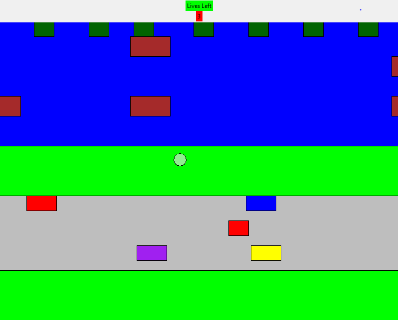

The objective of this game was to get the player to the other side and land on a lily pad and also dodge cars and other dangers while trying to get to the other side
The hardest part was the collision detection . we finished the graphing of the game in minutes.
heres a link to my respository github respository link
a image of frogger trying to cross the road
